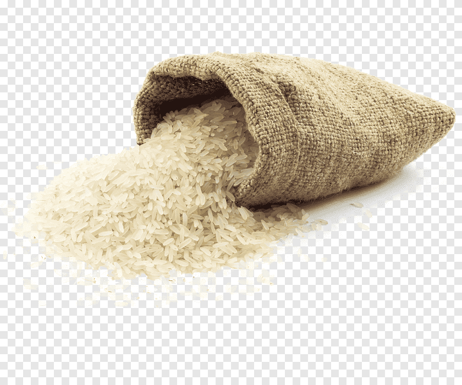
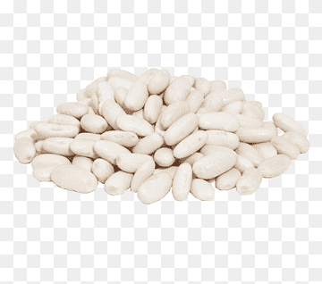
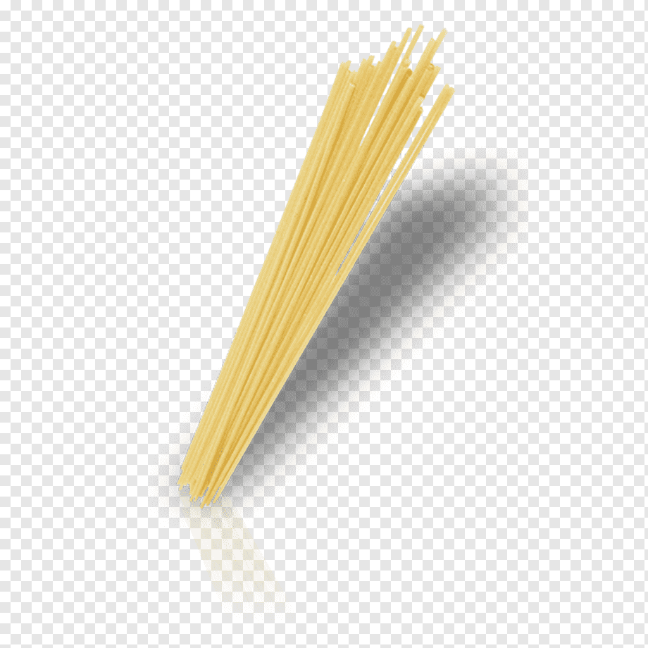
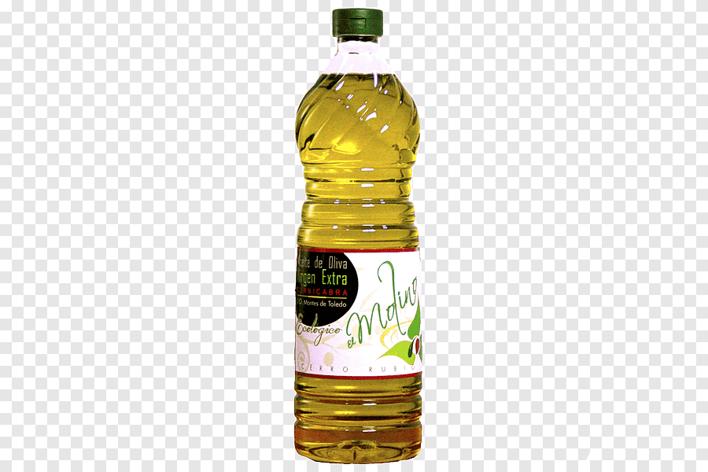
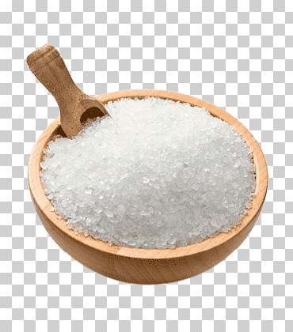

Comprometidos con ofrecer productos frescos y de calidad a precios ajustados.
Una historia de dedicación y excelencia desde hace 35 años.
Nuestros Servicios
En Salud y Bienestar ofrecemos una amplia variedad de productos frescos, de alta calidad y a precios competitivos. Nuestros supermercados están diseñados para brindarte una experiencia de compra fácil y rápida, siempre asegurando la frescura y el abastecimiento continuo de nuestros alimentos.
Contamos con secciones especializadas en frutas, verduras, carnes, pescados y productos locales. Además, trabajamos en conjunto con pequeños productores para ofrecerte lo mejor de cada región.
Nuestros Productos
Ofrecemos una amplia variedad de productos frescos, incluyendo frutas, verduras, carnes y productos locales. Todos nuestros productos son seleccionados cuidadosamente para garantizar la mejor calidad.

Arroz
Arroz de grano largo, ideal para acompañar tus comidas.
Precio: $1.50/kg

Frijoles Negros
Frijoles negros de alta calidad, perfectos para guisos y ensaladas.
Precio: $1.20/kg

Pasta
Pasta de trigo duro, ideal para preparar deliciosos platos.
Precio: $2.00/kg

Aceite de Oliva
Aceite de oliva virgen extra, perfecto para aderezar y cocinar.
Precio: $5.00/litro

Sal
Sal marina, esencial para realzar el sabor de tus comidas.
Precio: $0.50/kg
Sobre Nosotros
Somos un equipo apasionado por ofrecer los mejores productos frescos y de calidad. Nuestro objetivo es brindar a nuestros clientes una experiencia excepcional y productos que satisfagan sus necesidades.
Juan Pérez
Fundador y CEO. Con más de 10 años de experiencia en la industria alimentaria.
María López
Gerente de Operaciones. Encargada de asegurar la calidad de nuestros productos.
Carlos García
Jefe de Ventas. Apasionado por ayudar a nuestros clientes a encontrar lo que necesitan.
Ubicación
Visítanos en nuestra tienda:
Blogs
Visita nuestro blog para obtener consejos sobre salud, recetas y novedades sobre nuestros productos.
Receta 1: Ensalada Fresca
Una deliciosa ensalada fresca con ingredientes locales. Leer más
Receta 2: Arroz con Pollo
Un clásico de la cocina, fácil de preparar y muy sabroso. Leer más
Ensalada Fresca
Ingredientes:
Lechuga
Tomate
Pepino
Aguacate
Aderezo al gusto
Instrucciones:
1. Lava y corta todos los ingredientes.
2. Mezcla en un tazón grande y añade el aderezo.
3. Sirve fría y disfruta.
Arroz con Pollo
Ingredientes:
1 pollo troceado
2 tazas de arroz
1 cebolla
1 pimiento
Caldo de pollo
Especias al gusto
Instrucciones:
1. Sofríe la cebolla y el pimiento en una olla.
2. Añade el pollo y cocina hasta dorar.
3. Agrega el arroz y el caldo, cocina hasta que el arroz esté listo.